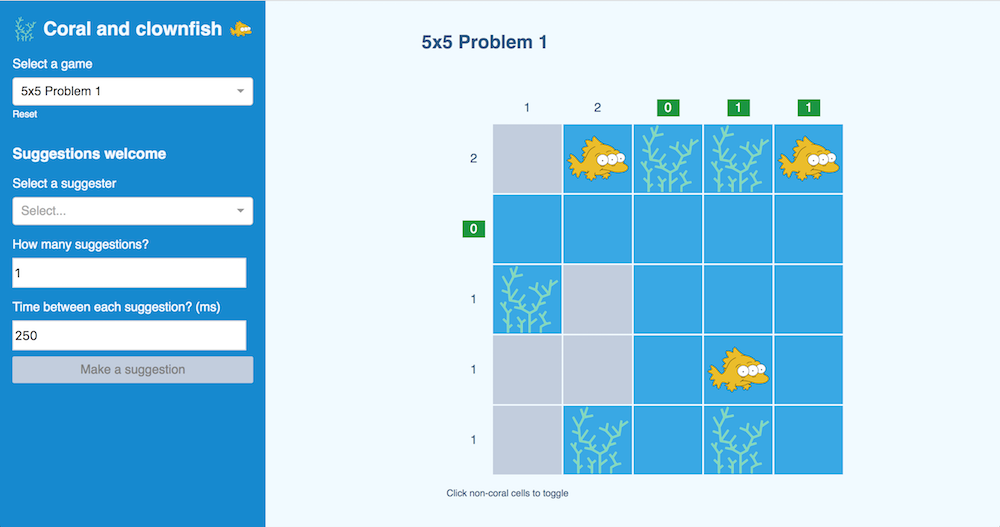
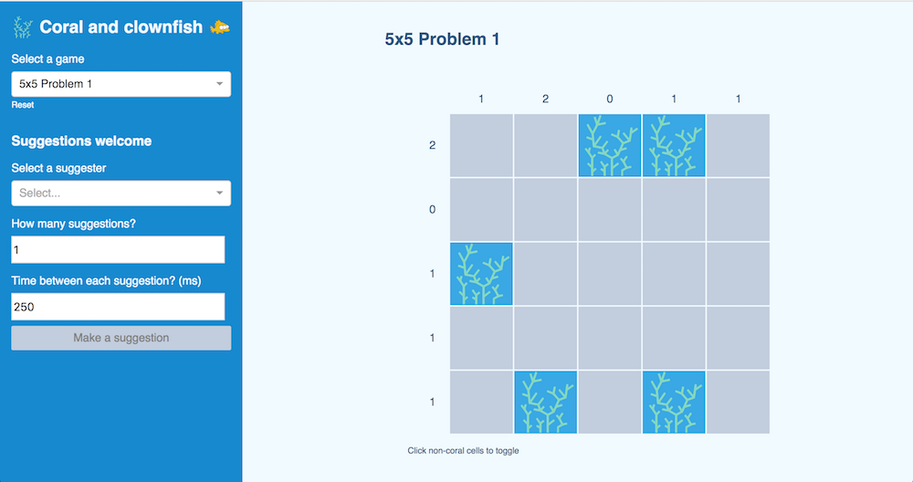
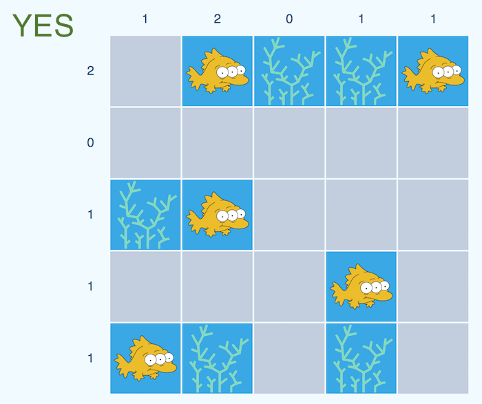
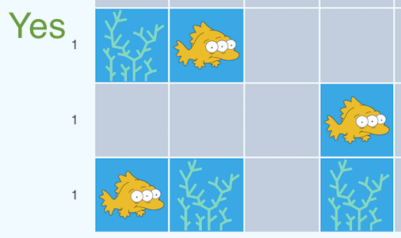
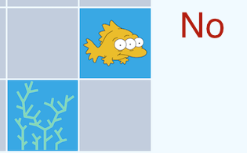

Programming competition 5/11/2018
Scott Sirowy
Created: 2018-05-10 Thu 11:18
Coral and clownfish
Coral and clownfish is a clone of a popular game found on both the Apple app store, and Android play store called Tents and Trees.

Goal of game
The goal of Coral and Clownfish is to determine where the clownfish should be placed. A board will begin in a state where all of the coral are shown.

Rules/Constraints
1) Each piece of coral has one clownfish connected to it.

Do not leave a straggling coral behind

2) Each clownfish is connected to a coral either horizontally or vertically.

Fish aren't connected to coral diagnally

No clownfish are adjacent to each other, either horizontally, vertically, or diagnally.
Fish need their space.
Row/column constraints.
The number of clownfish in each row and column is dictated by a constraint presented to left of rows and on the top of columns. This should help you figure out where out where clownfish need to be placed.
Programming competition
The original Tents and Trees provides a button to provide a suggestion when you get stuck.
What you will write
The goal of this competition is to write a suggester to provide a suggestion for what move to make next.
Completing the game
Combined with a bot that can run N moves automatically, your suggester should be able to complete a series of predefined puzzles.
Setup
This game is built using React and a couple of extra small libraries. The game also uses Redux to maintain state. You won't really need to know how most of the app is working in order to write a suggester. You can just write basic Javascript to complete the competition part, but feel free to poke around the code and figure out what this game is doing. This is my first React app, so not everything may be up to code (pun intended), but I tried to employ the basic patterns as defined in the docs.
Prerequisites
Thats it!
Installation
- Clone this repository.
git clone git@github.com:ssirowy/coral-clownfish.git
- Download all dependencies.
cd coral-clownfish
npm install
- Run the game
npm start